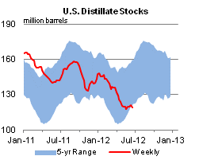

U.S. Refinery Capacity: Final Data for 2011 and Developments in 2012
U.S. refining capacity has always fluctuated, expanding or contracting with market conditions, changes in consumption patterns, and changes in product specifications. So has the corporate ownership of U.S. refineries, with some individual plants changing hands multiple times in their history. Last year was no exception: 2011 saw numerous refinery sales and several plant closures. There have already been additional changes this year, as the refining landscape continues to evolve, and further changes may occur before the end of the year.
The U.S. Energy Information Administration (EIA) keeps track of changes in U.S. refining ownership and overall capacity on an annual basis. According to the latest EIA Refinery Capacity Report released June 22, there were, as of January 1, 2012, 144 operable refineries in the United States with capacity totaling 17.3 million barrels per calendar day (bbl/d), 414,000 bbl/d lower than on January 1, 2011 (Figure 1). The decrease in capacity is mostly due to the closure of two refineries in Pennsylvania; Sunoco's Marcus Hook refinery and ConocoPhillips' Trainer refinery.
{kind=link}
Looking into 2012, EIA completed detailed analyses of the potential impact of these refinery closures in its report Potential Impacts of Reductions in Refinery Activity on Northeast Petroleum Product Markets released in February 2012, and Energy In Brief released in May 2012. Since the release of these reports, however, Delta Air Lines has agreed to purchase the Trainer plant, which has a capacity of 185,000 bbl/d. To date, there has been no determination as to when the refinery will once again operate. Meanwhile, Energy Transfer Partners agreed to acquire Sunoco, which earlier had stated it would close its Philadelphia refinery by August 1 if no buyer was found. Potential buyers have reportedly emerged for that plant, and its outlook remains unclear. Finally, it should be kept in mind the data as of January 1 do not reflect other important refinery capacity developments since the start of 2012, including the 325,000-bbl/d crude distillation expansion of the Motiva refinery in Port Arthur, TX, now clouded by an industrial accident that occurred in early June.
While the amount of crude distillation capacity is the single most widely tracked capacity indicator, capacity for other types of refinery units can follow a different pattern over time, as refiners invest in specific types of capacity needed to support their desired input and product slates. Overall, 2011 saw a slight decrease in capacity for catalytic cracking, catalytic reforming and hydrotreating. This is due in part to the refinery closures on the East Coast, Petroleum Administration for Defense District (PADD) 1. However, vacuum distillation capacity, coking capacity and hydrocracking capacity increased. Expansions at WRB's Wood River, Illinois refinery and Total's Port Arthur, Texas refinery helped mitigate the PADD 1 declines.
Of the 144 operable U.S. refineries recorded by the EIA Refinery Capacity Report, 134 were operating and 10 were idle as of January 1, 2012. A refinery is considered idle if the atmospheric crude oil distillation unit (ACDU) is not in operation and not under active repair, but capable of being placed in operation within 30 days; or the ACDU is not in operation, but under active repair that can be completed within 90 days. Based on the definition above, refineries are considered to be idle if on January 1 they are not in operation for any number of reasons including routine maintenance, unplanned maintenance, or market conditions.
Refinery sales in 2011 included the merger of Holly Corp with Frontier Refining and Marketing, bringing HollyFrontier Corporation's total refinery capacity to 470,350 bbl/d. Murphy Oil Corporation sold both of its U.S. refineries last year. Valero Energy Corporation purchased Murphy's Meraux, Louisiana refinery, and Calumet Lubricants purchased its Superior, Wisconsin refinery. On May 1, 2012, ConocoPhillips split into two stand-alone, publicly traded corporations. The downstream operations and nine refineries in the lower 48 states will be owned by Phillips66, and the refinery in Prudhoe Bay, Alaska will remain under ConocoPhillips.
With the purchase of the Meraux refinery, Valero is once again the largest U.S. refiner, with total capacity of 1.863 million bbl/d as of January 1, 2012. ExxonMobil was a close second with 1.856 million bbl/d. ConocoPhillips fell to third largest while BP PLC and Marathon Petroleum Corporation ranked fourth and fifth, for the third consecutive year. These five companies make up 45 percent of total U.S. refining capacity.
On a PADD level, the top rankings by corporate capacity are mostly unchanged from the last two years. With the closure of Sunoco's Marcus Hook refinery, PBF Energy Corp now leads the East Coast (PADD 1) with 29 percent of its capacity. Marathon Oil Corporation leads in the Midwest (PADD 2) with 17 percent. ExxonMobil Corporation has 16 percent of the capacity in the Gulf Coast (PADD 3). In the Rocky Mountains (PADD 4), Suncor Energy Inc. leads with 17 percent of capacity, while Chevron Corporation has the most capacity in the West Coast (PADD 5) with 18 percent.
Gasoline and diesel prices fall again
The U.S. average retail price of regular gasoline decreased 10 cents this week to $3.44 per gallon, 14 cents per gallon lower than last year at this time. This is the 12th consecutive week that the average U.S. price has declined. Prices dropped in all regions of the Nation, with the largest decrease on the West Coast, where the price fell 14 cents to $3.82 per gallon. The Midwest price decreased 13 cents to $3.43 per gallon, while the Gulf Coast price dropped about seven cents to $3.20 per gallon. The average price on the East Coast and in the Rocky Mountain region both decreased about six cents, to $3.34 per gallon and $3.63 per gallon, respectively.
The national average diesel fuel price decreased five cents to $3.68 per gallon, 21 cents per gallon lower than last year at this time. This marks the 11th consecutive week that the average U.S. price has fallen. The West Coast saw the largest decrease for the fifth consecutive week, falling six cents to $3.84 per gallon. The price in all other regions of the Nation dropped about five cents. The average diesel price is now $3.72 per gallon, $3.61 per gallon, $3.60 per gallon, and $3.78 per gallon on the East Coast, Midwest, Gulf Coast, and Rocky Mountain regions, respectively.
Propane stocks show more growth
U.S. inventories of propane continued their seasonal growth last week, adding 1.8 million barrels to end at 61.4 million barrels, 57 percent higher than the same week last year. Most of the build in stocks occurred in the Midwest region, which added 0.9 million barrels. The Gulf Coast region grew by 0.5 million barrels, the East Coast was up 0.3 million barrels and Rocky Mountain/West Coast stocks grew by 0.2 million barrels. Propylene non-fuel-use inventories represented 6.1 percent of total propane inventories.
Text from the previous editions of This Week In Petroleum is accessible through a link at the top right-hand corner of this page.
| Retail Data | Change From Last | Retail Data | Change From Last | ||||
| 06/25/12 | Week | Year | 06/25/12 | Week | Year | ||
| Gasoline | 3.437 | Diesel Fuel | 3.678 | ||||
|
|||||||||||||||||||||||||||
| *Note: Crude Oil Price in Dollars per Barrel. | |||||||||||||||||||||||||||
|  | |||||||
| Stocks Data | Change From Last | Stocks Data | Change From Last | ||||
| 06/22/12 | Week | Year | 06/22/12 | Week | Year | ||
| Crude Oil | 387.2 | Distillate | 118.9 | ||||
| Gasoline | 204.8 | Propane | 61.376 | ||||